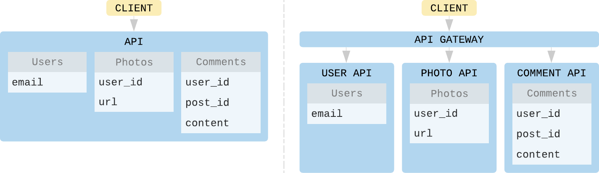

About APIs
APIs are a way of doing message-passing between systems.
They allow a client to access & act on ressources of a remote system, while hidding most of the complexity of that system (encapsulation).
JSON:API & GraphQL are two set of specifications that help you build API's in a standardized way, faster, avoiding bikeshedding.
What truly matters
Kit helps you design your apps in a domain driven way. The "growth-ready" way is to build your domain in a mono-repo. At first, they will likely be exposed through the same app-container in production, as it is simpler & cheaper.
External clients will be able to connect to 1 API.
As your business & system grow, there will be valid reasons to expose these domains as different apps in production. So now you effectively have N APIs, but you don't want clients to have to know about the specifics of the production setup.
This is why having a way to aggregate & expose the various graphs (resources + operations of your domain) through a gateway is important.

Layers
There are different layers that can be identified for any API.
| Properties | Definition |
|---|---|
A Query interface |
How you express your request (acting on data) |
B Query format |
How the various operations (read, create, update, delete) are expressed. |
C API's resources standardization |
How you standardize your API's business resources. This allows API auto-discovery and connecting graphs. (Ex for Stripe: PaymentSource, Charge, Refund, etc). |
D Response format |
The API's response format (serialization). |
Once we identify them in the specs, we gain the ability to build APIs that can be exposed for free through both standards.
You can even mix & match if you find a valid usecase, like: GraphQL query interface + GraphQL resources standardization + JSON:API response format)
This is what Kit::Api is about.